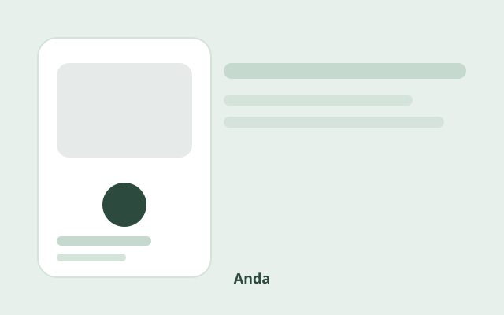

Anda
A mobility platform designed around informal transit networks in Luanda — connecting riders, drivers, and local operators through a flexible, trust-first experience.
- Role
- Lead UX Designer
- Timeline
- 12 weeks
- Team
- PM, 2 engineers, researcher
- Deliverables
- Research synthesis, flows, hi-fi UI

Overview
Anda explores how ride-hailing can adapt to Angola's mix of formal apps and informal shared taxis (candongueiros). Rather than replacing existing habits, the product surfaces trusted local options and simplifies coordination for everyday trips.
This is a placeholder case study. Full research findings, process, and screens will be added.
Problem
Urban mobility in Luanda is fragmented. Riders juggle cash payments, unreliable ETAs, and limited visibility into which routes serve their neighborhood — especially outside central districts.
Approach
- Contextual inquiry with riders and candongueiro operators
- Journey mapping across cash, connectivity, and trust constraints
- Iterative prototyping focused on offline-first booking flows
- Usability testing in low-bandwidth conditions
Outcome
Placeholder for impact metrics and key design decisions. Screenshots and annotated flows will live in this section once assets are finalized.